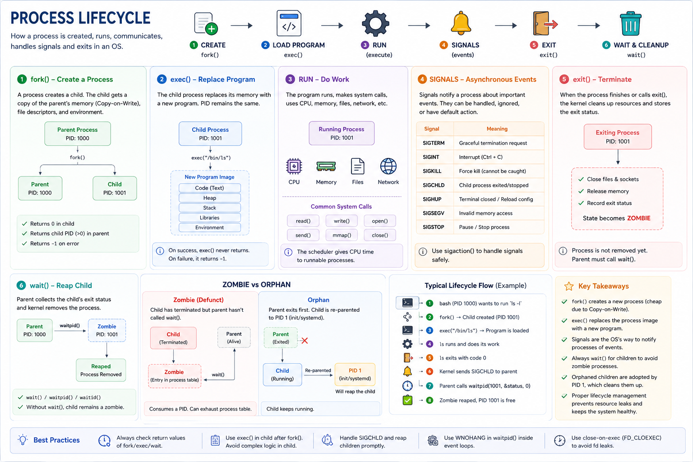

fork() • exec() • wait() • Signals • Zombie • Orphan • Graceful Shutdown
Core Idea
Every process — web server, database, container, shell command — follows the same OS lifecycle. Without a managed lifecycle the system leaks memory, file descriptors, and PIDs until it collapses.
1. Create
fork()
2. Load
exec()
3. Run
execute
4. Signals
events
5. Exit
exit()
6. Reap
wait()
Step 1 — fork() — Create a Process
A process calls fork() to spawn a child. The child gets a near-identical copy of the parent using Copy-on-Write (COW) — no full memory copy until a page is modified.
What child inherits
COW benefit: fork() followed immediately by exec() is extremely cheap — COW pages are never actually copied.
Step 2 — exec() — Load a New Program
After fork(), the child usually replaces itself with a different program. The kernel wipes the child's memory and loads the new executable — same PID, brand new program.
Real example — Linux Shell running ls -l
Step 3 — Run (Execute Work)
The scheduler allocates CPU time. The process interacts with the kernel via system calls for every real-world operation.
read() / write() — file I/Osend() / recv() — networkopen() / close() — file descriptorsmmap() — memory mappingThe scheduler continuously switches between runnable processes. Each gets a time slice (quantum) until blocked or preempted.
Step 4 — Signals (Async Notifications)
Signals notify a process about important events without polling. The OS delivers them asynchronously.
| Signal | Meaning | Catchable? |
|---|---|---|
SIGTERM | Graceful shutdown request | Yes |
SIGINT | Ctrl+C interrupt | Yes |
SIGKILL | Force kill immediately | No |
SIGCHLD | Child process exited | Yes |
SIGHUP | Terminal closed / reload config | Yes |
SIGSEGV | Invalid memory access | Yes* |
SIGSTOP | Pause process | No |
Use sigaction() to install signal handlers safely. Signals are the OS's only way to notify processes of external events.
Step 5 — exit() — Terminate
When execution completes, the process calls exit(). The kernel cleans up resources but does not remove the process entry yet.
The kernel keeps the process entry so the parent can collect the exit code. Without wait(), it stays a zombie forever.
Step 6 — wait() — Reap the Child
The parent calls wait() or waitpid() to collect the child's exit status. Only then does the kernel fully remove the process.
wait variants
wait() — wait for any childwaitpid(pid, ...) — wait for specific childwaitpid(..., WNOHANG) — non-blocking pollwaitid() — fine-grained controlZombie vs Orphan — The Two Cleanup Failures
Zombie (Defunct) — Parent forgot wait()
Impact
Fix
Install a SIGCHLD handler that calls waitpid(-1, NULL, WNOHANG) in a loop to reap all finished children.
Orphan — Parent dies first
Why this matters in containers
tini or a proper init as PID 1Real-World Architecture Examples
| System | Pattern |
|---|---|
| Linux Shell | fork → exec("/bin/cmd") → wait() |
| PostgreSQL | Postmaster forks a backend per client; SIGCHLD + waitpid() reaps it |
| Apache Prefork | Master forks N workers; each handles one client, then exits |
| Nginx | SIGTERM → master drains workers → graceful exit |
| Docker / K8s | App runs as PID 1; must handle SIGTERM and reap child zombies |
| systemd | Adopts all orphans; reaps them when they exit |
Production Failure Scenarios
Zombie accumulation → PID exhaustion
Parent spawns children but never calls wait(). PIDs fill up. New processes cannot be created. Install SIGCHLD handler + loop waitpid(WNOHANG).
Container won't stop — SIGTERM ignored
K8s sends SIGTERM; app ignores it; after grace period K8s sends SIGKILL. In-flight requests fail abruptly. Always handle SIGTERM for graceful shutdown.
High fork() overhead per request
Spawning a new process per request at high RPS burns CPU on process creation. Use worker pools, thread pools, or connection pooling instead.
Engineer Progression
Junior
"How do I create another process?"
Senior
"Should I use fork() or threads for this workload?"
Staff
Staff Engineer Decision Framework
| Scenario | Approach |
|---|---|
| Run a different program | fork() + exec() |
| Collect child exit status | waitpid() |
| Graceful shutdown | Handle SIGTERM |
| Force stop | SIGKILL (last resort) |
| Prevent zombie accumulation | SIGCHLD handler + WNOHANG loop |
| High-throughput workers | Worker pool — avoid per-request fork |
| Container PID 1 | Use tini or handle SIGCHLD yourself |
| Reload config without downtime | SIGHUP handler |
Interview Cheat Sheet
Principal Engineer Takeaway
fork() + exec() — COW makes creation cheap; exec() replaces image, same PID
Signals — async OS notifications; always handle SIGTERM and SIGCHLD
Zombie / Orphan — both are resource leaks; wait() and PID 1 adoption solve them
Production focus — graceful shutdown, zombie prevention, worker pools, container PID 1
Staff Engineers focus not just on correctness but on process creation cost, graceful shutdowns, signal handling, zombie prevention, and minimizing process churn. Proper lifecycle management keeps production systems stable and resource-leak-free.
